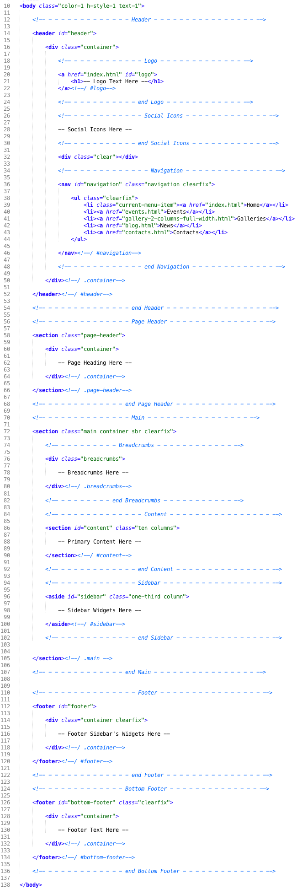

Thank you for purchasing my theme. If you have any questions that are beyond the scope of this help file, please feel free to email via my user page contact form here. Thanks so much!
This theme is a fixed layout with two columns. All of the information within the main content area is nested within a div with an id of "content". The sidebar's (column #2) content is within a div with an id of "sidebar". The general template structure is the same throughout the template. Here is the general structure.

If you would like to edit the color, font, or style of any elements in one of these columns, you would do the following:
#content a {color: #someColor;}
If you find that your new style is not overriding, it is most likely because of a specificity problem. Scroll down in your CSS file and make sure that there isn't a similar style that has more weight.
I.E.
.container #content a {color: #someColor;}
So, to ensure that your new styles are applied, make sure that they carry enough "weight" and that there isn't a style lower in the CSS file that is being applied after yours.
Notice: As our template goes with an ability to change your template's color to any, there are two simple steps to set it up.
That's all, Enjoy it!
I'm using one main CSS file and two addition styles one for responsibility layout (skeleton.css) and one other for slider settings, there are general styles for whole theme and reset styles inside main style.css. Many browser interpret the default behavior of html elements differently. By using a general reset CSS styles in this file, we can work round this. This file also contains some general styling, such as anchor tag colors, font-sizes, etc. Keep in mind, that these values might be overridden somewhere else in the file.
/* ----------------------
Stylesheet Guide
-------------------------
01. Reset
02. Styling
1. Color
2. Bg Color
03. Basic Elements
1. Clearfix
2. General Classes
3. Dividers
4. Ordered / Unordered List Styles
5. Buttons
6. Forms
7. Notifications
04. Header
05. Header
1. Logo
2. Social Icons
3. Main Navigation
06. Slider
07. Page Header
08. Main
1. Breadcrumbs
09. Content
1. 404 Page
10. Blog
1. Comments
2. Pagination
11. Portfolio
1. Portfolio Items
2. Gallery Items
12. Contact Us
13. Sidebar
1. Widgets
- Search
- Popular Posts
- Twitter
- Flickr
- Categories
- Archive
- Custom Menu
- Links
- Meta
- Pages
14. Bottom Sidebar
1. Widgets
- Recent Entries
- Upcoming Events
- Audio
15. Footer
1. Widgets
- Contacts
- Recent Entries
- Contact Form
16. Bottom Footer
1. Copyright
17. Widgets + Shortcodes
1. Content Tabs
2. FAQ Toggle
3. Table
18. Media Queries
*/
If you would like to edit a specific section of the site, simply find the appropriate label in the CSS file, and then scroll down until you find the appropriate style that needs to be edited.
Any images that are placed within the blog section have 5px worth of padding and a light bluish background. If you would like to edit the display of these images, find the following section in the style sheet:
#content .entry img {
change styles here:
}
This theme imports 10 Javascript files. You can see some help info, when click links which are below each regarding script:
This template is going with working inbuilt contact form.
To make it worked simply open a file php/contact-send.php (line 6) and edit there an email address then upload all the files to your server.
I've included three psds with this theme:
If you'd like to change the main image in the header, open "01_home.psd", make the necessary adjustments, and then save the file as "headerBG.png". Do the same for other elements.
I've used Slider Revolution jQuery plugin in this template.
I've used the following images, icons or other files as listed.
Once again, thank you so much for purchasing this theme. As I said at the beginning, I'd be glad to help you if you have any questions relating to this theme. No guarantees, but I'll do my best to assist. If you have a more general question relating to the themes on ThemeForest, you might consider visiting the forums and asking your question in the "Item Discussion" section.
ThemeMakers